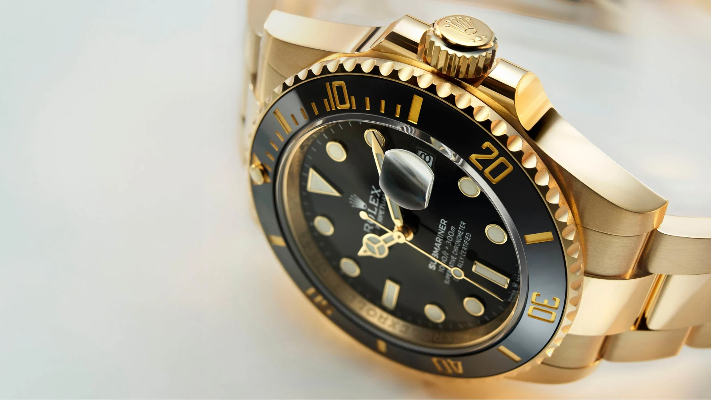
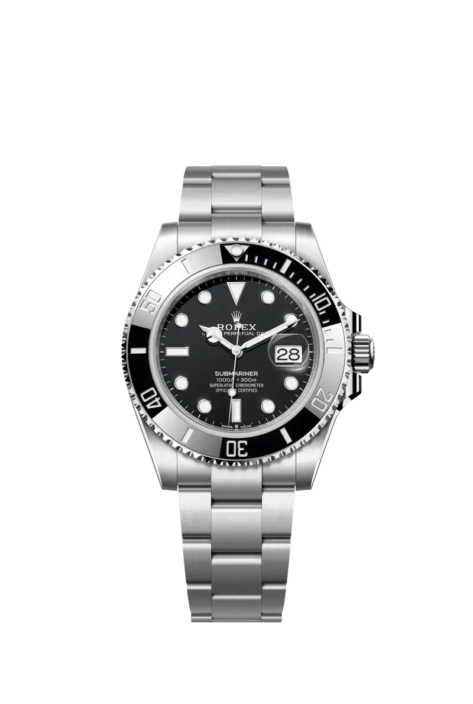
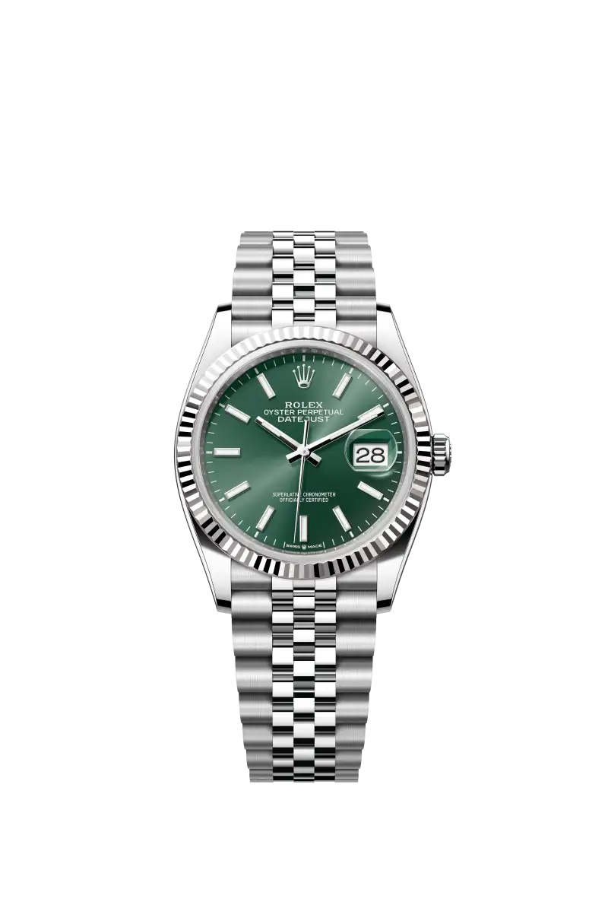
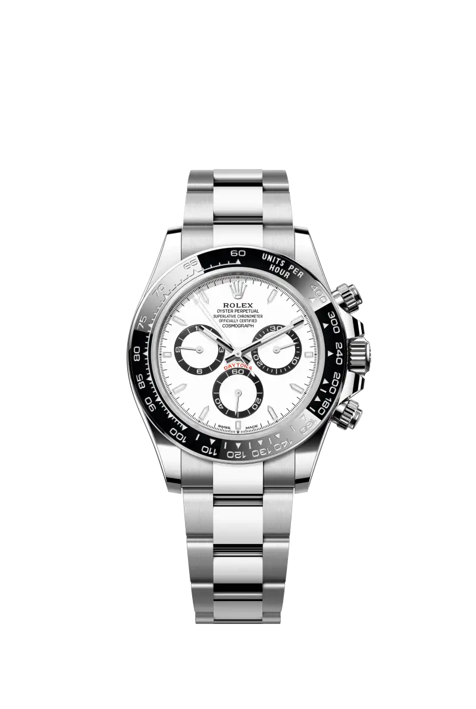
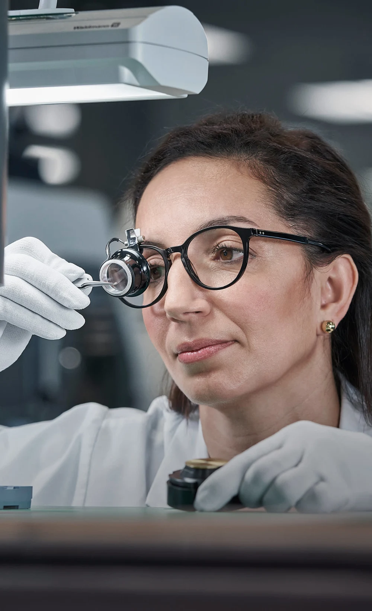

Case size 케이스 크기
시계 케이스의 지름을 뜻합니다. 숫자가 클수록 손목 위에서 더 큰 존재감을 느낄 수 있습니다.

변하지 않는 기준. 끊임없이 진화하는 시간.
PERPETUAL EXCELLENCETHE COLLECTIONS
서로 다른 세계를 위한 세 가지 아이콘.
당신의 일상에 어울리는 시계를 만나보세요.
A PERSONAL STARTING POINT
어떤 시간이 당신에게 어울릴까요?
크기와 소재를 선택하고, 취향에 가까운 모델을 찾아보세요.
THE DETAILS, SIDE BY SIDE
마음에 드는 세 모델, 작은 차이까지 나란히.
| YOUR SELECTION세 가지 기준, 하나의 선택. |  서브마리너 데이트 |  데이트저스트 36 |  코스모그래프 데이토나 |
|---|---|---|---|
| 케이스 크기 | 41 mm | 36 mm | 40 mm |
| 케이스 소재 | 오이스터스틸 | 오이스터스틸 & 화이트 골드 | 오이스터스틸 |
| 다이얼 | 블랙 | 민트 그린 | 화이트 |
| 무브먼트 | 칼리버 3235날짜 표시 | 칼리버 3235날짜 표시 | 칼리버 4131크로노그래프 |
| 파워리저브 | 약 70시간 | 약 70시간 | 약 72시간 |
| 방수 성능 | 300 m | 100 m | 100 m |
| 와인딩 방식 | 퍼페츄얼 셀프 와인딩 | 퍼페츄얼 셀프 와인딩 | 퍼페츄얼 셀프 와인딩 |
표시된 레퍼런스 기준의 사양입니다. 롤렉스 공식 정보 확인
A LITTLE KNOWLEDGE GOES A LONG WAY
시계 케이스의 지름을 뜻합니다. 숫자가 클수록 손목 위에서 더 큰 존재감을 느낄 수 있습니다.
손목의 움직임이 로터를 회전시켜 태엽을 감습니다. 일상의 움직임이 시계의 동력이 됩니다.
태엽을 충분히 감은 시계가 추가 와인딩 없이 작동할 수 있는 시간입니다.

THE ART OF WATCHMAKINGEXCELLENCE IN THE MAKING
보이는 아름다움 너머, 보이지 않는 정밀함.
다이얼의 빛, 브레슬릿의 촉감, 무브먼트의 움직임까지. 하나의 롤렉스는 수많은 전문 기술과 세심한 마감이 만나 완성됩니다.
롤렉스 워치메이킹 살펴보기THE WORLD OF ROLEX
시계에 담긴 기술과 이야기.
롤렉스를 조금 더 깊이 만나는 시간.
YOUR TIME, YOUR CHOICE
화면에서의 첫 만남을, 손목 위의 경험으로.
롤렉스 공식 판매점에서 당신만의 시계를 만나보세요.